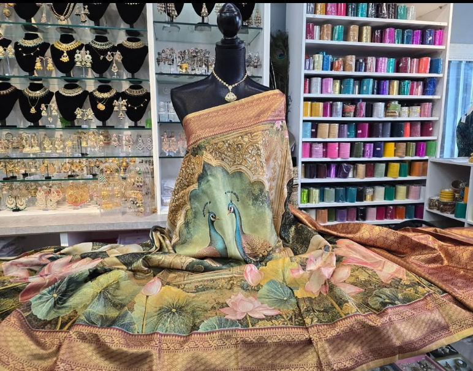
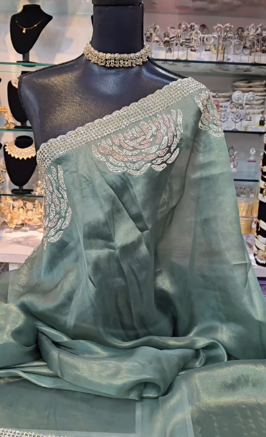

STYLE NOTES
Colour with character
Let a distinctive print become the centre of your occasion look.
NAFISA BOUTIQUE · BRAMPTON, CANADA
Inspiration, fabric stories and thoughtful ways to make each piece your own.

Let a distinctive print become the centre of your occasion look.

Notice the border, the texture and the way a fabric catches light.

A gentle palette can still make a memorable entrance.